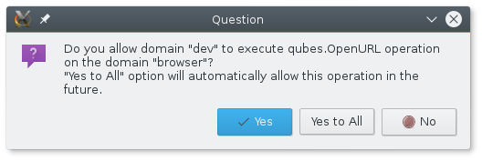

Qubes Tip: Opening links in your preferred AppVM
If you use Qubes like I do, you have many different AppVMs to compartmentalize different programs. You might have one VM for your email client, one for your jabber client, one for your password database. But if you click a link in any of these programs, it sure would be nice if that link opened in the browser VM of your choice. This isn’t all that hard to setup.
The command qvm-open-in-vm lets you open a document or a URL in another VM.
user@dev:~$ qvm-open-in-vm
Usage: /usr/bin/qvm-open-in-vm vmname filename
If you have a terminal open in your dev VM and want to load https://micahflee.com/ in your browser VM, you can do it like this:
user@dev:~$ qvm-open-in-vm browser https://micahflee.com
You get a prompt in dom0 asking if you really want to allow this cross-VM behavior. When you choose yes, a new tab loading my website opens in your default browser in your browser VM.

Excellent. Now let’s say you want this to automatically happen every time you click any link. You can do this by creating a .desktop file that advertises itself as a handler for http/https links, and then setting this as your default browser.
Open a text editor and copy and paste this into it:
[Desktop Entry]
Encoding=UTF-8
Name=BrowserVM
Exec=qvm-open-in-vm browser %u
Terminal=false
X-MultipleArgs=false
Type=Application
Categories=Network;WebBrowser;
MimeType=x-scheme-handler/unknown;x-scheme-handler/about;text/html;text/xml;application/xhtml+xml;application/xml;application/vnd.mozilla.xul+xml;application/rss+xml;application/rdf+xml;image/gif;image/jpeg;image/png;x-scheme-handler/http;x-scheme-handler/https;
Replace browser in the line that says Exec=qvm-open-in-vm browser %u with whatever AppVM you want to open links in. Save this file to ~/.local/share/applications/browser_vm.desktop.
Finally, set it as your default browser (like I’m doing here in my email VM):
user@email:~$ xdg-settings set default-web-browser browser_vm.desktop
Now whenever you click a link in a program running in this VM (such as Thunderbird), it will open that link in your browser VM.


Legacy comments, imported from previous version of this blog:
Counter Surveillance
September 22, 2018 09:06 PM
My son was putting his cell phone through it's paces the other evening for my enjoyment. Everything depends on your own personal needs and wishes, and there are numerous options available. Advantages - A A smart home contains video cameras and motion sensors that will easily detect any unwanted motion inside absence of property owner and in addition generates an alarm.
https://www.masterdcm.com/
January 27, 2017 12:52 AM
Thanks for the good writeup. It actually was once a leisure account it. Glance complex to more brought agreeable from you! By the way, how could we be in contact?
A.B.
June 22, 2016 02:58 PM
This is amazing! I was looking how to do something like this but regarding opening Office docs in windows VM, i will try to do this so i double click any document and it opens in the windows VM, so far i've been using the command qvm-open-in-vm form the terminal...
Micah Lee
June 23, 2016 04:23 PM
Here are the Microsoft Office document MIME types: http://filext.com/faq/office_mime_types.php
I haven't tested it, but I bet you could accomplish this if you make a .desktop file that looks something like:
Then, in the file manager Nautilus, right-click on an Office document, Properties, go to the Open With tab, and choose MicrosoftOfficeVM, and set as default.
C5peace
June 2, 2018 05:03 PM
Hi, can you please let me know whether it works. I have a software that works only in Windows :/ (BaKoMa TeX, I paid a lot of money:/) so I want to run all tex files in Windows VM. Sorry I am lazy and also afraid (my computer has 8 GB RAM only) to try Windows VM because I need it only for that software. Thank you
C5peace
June 2, 2018 05:13 PM
I think yes it does. Sorry https://www.qubes-os.org/doc/windows-tools/
kulinacs
June 23, 2016 09:11 PM
I've written a similar desktop file for disposable VMs. https://github.com/kulinacs/qubes-desktop/blob/master/qvm-open-in-dvm.desktop I was unaware this would also work for links. Thanks for sharing!
Micah Lee
June 24, 2016 09:13 AM
Thanks, this is excellent!
Scott
April 2, 2018 07:35 PM
Would love to see porcupine integrated to Qubes, to handle these kinds of cases.
https://github.com/micahflee/porcupine/issues/4
Willie
April 28, 2017 03:06 PM
Can you really find service listed here dealing with %BT%? Some of my essay into it would have to be developed by upcoming Friday… Having Said That I be knowledgeable about so little concerning.